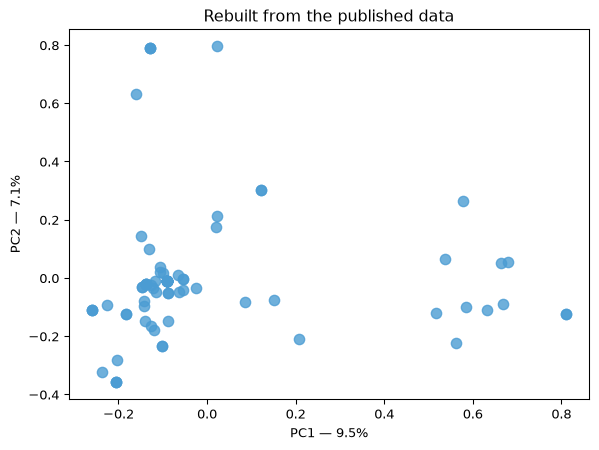

The walkthrough version — run these cells yourself
This page is the teaching companion to the taste map. Everything here runs against the published, anonymized data, so students can re-derive the map without touching the private response sheet.
Step 1 — one document per person
Each person’s “document” is the sentence they wrote about how their song makes them feel. Not their genre checkboxes, not their program — the sentence. That choice is the whole methodology: we are mapping how people describe feeling, and everything interesting on the map follows from it.
Build the documents
from pathlib import Pathimport pandas as pdsrc = Path("docs_data/responses_anon.csv")HAVE_DATA = src.exists()if HAVE_DATA: df = pd.read_csv(src) docs = df["taste_text"].fillna("").astype(str).str.lower() docs = docs[docs.str.strip() !=""]print(f"{len(docs)} sentences, median length "f"{int(docs.str.split().str.len().median())} words") display(docs.head(3).tolist())else:print("No data yet — this page becomes live once the pipeline has run.")
81 sentences, median length 3 words
['missing the old days', 'hopeful, happy, and seen', 'excited and proud']
Note
The cells below only produce output once there are enough responses — roughly 4 at an absolute minimum, and 15+ before the map means much. Generate sample data with python scripts/make_sample_data.py --n 42 to walk through this offline at full size.
Step 2 — tf-idf
The point to make out loud: term frequency rewards repetition, and inverse document frequency punishes ubiquity. A word earns weight only when it’s frequent here and rare elsewhere.
min_df=2 (“ignore terms appearing in only one response”) is the right default for a full cohort, but with a handful of one-sentence answers it can throw away the entire vocabulary. So we start strict and relax if too little survives — the same thing scripts/03_taste_map.py does.
Vectorize
from sklearn.feature_extraction.text import TfidfVectorizerX, vec, HAVE_VECTORS =None, None, Falseif HAVE_DATA andlen(docs) >=4:for min_df in (2, 1): vec = TfidfVectorizer(stop_words="english", ngram_range=(1, 2), min_df=min_df, max_df=0.9, sublinear_tf=True)try: X = vec.fit_transform(docs)exceptValueError: X =Nonecontinueif X.shape[1] >=max(5, len(docs) //4):break HAVE_VECTORS = X isnotNoneand X.shape[1] >=2if HAVE_VECTORS:print(f"{X.shape[0]} responses x {X.shape[1]} terms (min_df={vec.min_df})")else:print("Not enough shared vocabulary yet — add more responses.")elif HAVE_DATA:print(f"Only {len(docs)} responses so far; this page needs at least 4.")
81 responses x 40 terms (min_df=2)
Which terms carry the most weight overall?
import numpy as npif HAVE_VECTORS: terms = np.array(vec.get_feature_names_out()) weights = np.asarray(X.sum(axis=0)).ravel() k =min(15, len(terms)) display(pd.DataFrame({"term": terms[np.argsort(weights)[-k:][::-1]],"total tf-idf": np.sort(weights)[-k:][::-1].round(2)}))
term
total tf-idf
0
happy
5.32
1
makes
5.15
2
feel
5.00
3
energetic
4.83
4
like
4.78
5
nostalgic
4.71
6
makes feel
4.66
7
good
4.10
8
energized
3.13
9
relaxed
3.09
10
empowered
2.76
11
song
2.69
12
home
2.50
13
ready
2.32
14
fun
2.00
Step 3 — PCA
PCA can only extract as many components as the data actually has — bounded by both the number of responses and the size of the vocabulary. Asking for more than min(n_samples, n_features) raises an error, so we clamp it.
Project to two dimensions
from sklearn.decomposition import PCAcoords, pca, HAVE_MAP =None, None, Falseif HAVE_VECTORS: dense = X.toarray() n_comp =min(10, dense.shape[0] -1, dense.shape[1])if n_comp >=2: pca = PCA(n_components=n_comp, random_state=0) coords = pca.fit_transform(dense) HAVE_MAP =True display(pd.DataFrame( {"component": [f"PC{i+1}"for i inrange(len(pca.explained_variance_ratio_))],"variance explained": pca.explained_variance_ratio_.round(3)}).head(5))else:print(f"Only {n_comp} component(s) available — need at least 2. ""More responses will fix this.")
component
variance explained
0
PC1
0.095
1
PC2
0.071
2
PC3
0.068
3
PC4
0.061
4
PC5
0.058
If PC1 explains only 8–12% of the variance, that’s normal and worth dwelling on: text data in a few-hundred-dimensional vocabulary rarely concentrates. The map is a useful summary, not a faithful reproduction of the full space.
Step 4 — plot it
The scatter
import matplotlib.pyplot as pltif HAVE_MAP: fig, ax = plt.subplots(figsize=(7, 5)) ax.scatter(coords[:, 0], coords[:, 1], s=60, alpha=0.8, color="#4B9CD3") ax.set_xlabel(f"PC1 — {pca.explained_variance_ratio_[0]:.1%}") ax.set_ylabel(f"PC2 — {pca.explained_variance_ratio_[1]:.1%}") ax.set_title("Rebuilt from the published data") plt.show()else:print("The scatter appears once there are enough responses.")

Discussion prompts
Swap TfidfVectorizer for CountVectorizer. What happens to the map, and why does the common-word structure dominate?
Change min_df from 2 to 1. Rare terms return — does the map get more informative or just noisier?
Try TruncatedSVD instead of PCA (it works on the sparse matrix directly, without .toarray()). Where does that matter at real scale?
Cosine vs. Euclidean distance on tf-idf vectors: which one matches your intuition of “similar taste,” and what does document length have to do with it?
Ethics round: this map is built from things people volunteered about themselves. What would change if it were built from listening history scraped without asking?
Source Code
---title: "How it works"subtitle: "The walkthrough version — run these cells yourself"---This page is the teaching companion to the taste map. Everything here runsagainst the published, anonymized data, so students can re-derive the mapwithout touching the private response sheet.## Step 1 — one document per personEach person's "document" is the sentence they wrote about how their song makesthem feel. Not their genre checkboxes, not their program — the sentence. Thatchoice is the whole methodology: we are mapping *how people describe feeling*,and everything interesting on the map follows from it.```{python}#| code-summary: "Build the documents"from pathlib import Pathimport pandas as pdsrc = Path("docs_data/responses_anon.csv")HAVE_DATA = src.exists()if HAVE_DATA: df = pd.read_csv(src) docs = df["taste_text"].fillna("").astype(str).str.lower() docs = docs[docs.str.strip() !=""]print(f"{len(docs)} sentences, median length "f"{int(docs.str.split().str.len().median())} words") display(docs.head(3).tolist())else:print("No data yet — this page becomes live once the pipeline has run.")```::: {.callout-note}The cells below only produce output once there are enough responses — roughly4 at an absolute minimum, and 15+ before the map means much. Generate sampledata with `python scripts/make_sample_data.py --n 42` to walk through thisoffline at full size.:::## Step 2 — tf-idfThe point to make out loud: **term frequency** rewards repetition, and**inverse document frequency** punishes ubiquity. A word earns weight only whenit's frequent *here* and rare *elsewhere*.`min_df=2` ("ignore terms appearing in only one response") is the right defaultfor a full cohort, but with a handful of one-sentence answers it can throw awaythe entire vocabulary. So we start strict and relax if too little survives —the same thing `scripts/03_taste_map.py` does.```{python}#| code-summary: "Vectorize"from sklearn.feature_extraction.text import TfidfVectorizerX, vec, HAVE_VECTORS =None, None, Falseif HAVE_DATA andlen(docs) >=4:for min_df in (2, 1): vec = TfidfVectorizer(stop_words="english", ngram_range=(1, 2), min_df=min_df, max_df=0.9, sublinear_tf=True)try: X = vec.fit_transform(docs)exceptValueError: X =Nonecontinueif X.shape[1] >=max(5, len(docs) //4):break HAVE_VECTORS = X isnotNoneand X.shape[1] >=2if HAVE_VECTORS:print(f"{X.shape[0]} responses x {X.shape[1]} terms (min_df={vec.min_df})")else:print("Not enough shared vocabulary yet — add more responses.")elif HAVE_DATA:print(f"Only {len(docs)} responses so far; this page needs at least 4.")``````{python}#| code-summary: "Which terms carry the most weight overall?"import numpy as npif HAVE_VECTORS: terms = np.array(vec.get_feature_names_out()) weights = np.asarray(X.sum(axis=0)).ravel() k =min(15, len(terms)) display(pd.DataFrame({"term": terms[np.argsort(weights)[-k:][::-1]],"total tf-idf": np.sort(weights)[-k:][::-1].round(2)}))```## Step 3 — PCAPCA can only extract as many components as the data actually has — bounded byboth the number of responses and the size of the vocabulary. Asking for morethan `min(n_samples, n_features)` raises an error, so we clamp it.```{python}#| code-summary: "Project to two dimensions"from sklearn.decomposition import PCAcoords, pca, HAVE_MAP =None, None, Falseif HAVE_VECTORS: dense = X.toarray() n_comp =min(10, dense.shape[0] -1, dense.shape[1])if n_comp >=2: pca = PCA(n_components=n_comp, random_state=0) coords = pca.fit_transform(dense) HAVE_MAP =True display(pd.DataFrame( {"component": [f"PC{i+1}"for i inrange(len(pca.explained_variance_ratio_))],"variance explained": pca.explained_variance_ratio_.round(3)}).head(5))else:print(f"Only {n_comp} component(s) available — need at least 2. ""More responses will fix this.")```If PC1 explains only 8–12% of the variance, that's normal and worth dwellingon: text data in a few-hundred-dimensional vocabulary rarely concentrates. Themap is a useful *summary*, not a faithful reproduction of the full space.## Step 4 — plot it```{python}#| code-summary: "The scatter"import matplotlib.pyplot as pltif HAVE_MAP: fig, ax = plt.subplots(figsize=(7, 5)) ax.scatter(coords[:, 0], coords[:, 1], s=60, alpha=0.8, color="#4B9CD3") ax.set_xlabel(f"PC1 — {pca.explained_variance_ratio_[0]:.1%}") ax.set_ylabel(f"PC2 — {pca.explained_variance_ratio_[1]:.1%}") ax.set_title("Rebuilt from the published data") plt.show()else:print("The scatter appears once there are enough responses.")```## Discussion prompts1. Swap `TfidfVectorizer` for `CountVectorizer`. What happens to the map, and why does the common-word structure dominate?2. Change `min_df` from 2 to 1. Rare terms return — does the map get more informative or just noisier?3. Try `TruncatedSVD` instead of `PCA` (it works on the sparse matrix directly, without `.toarray()`). Where does that matter at real scale?4. Cosine vs. Euclidean distance on tf-idf vectors: which one matches your intuition of "similar taste," and what does document length have to do with it?5. Ethics round: this map is built from things people volunteered about themselves. What would change if it were built from listening history scraped without asking?